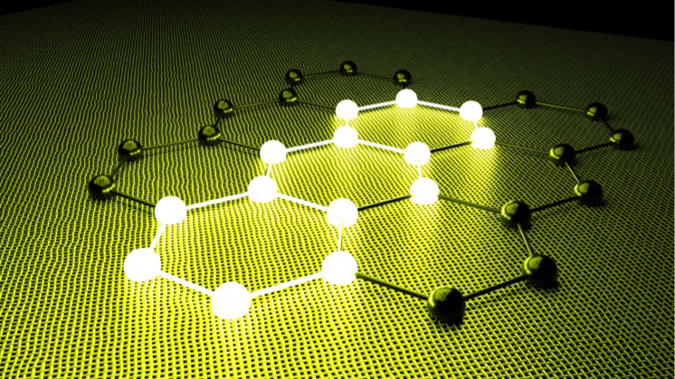

<!DOCTYPE html>
<html lang="en"></html>
<html>
<head>
    <meta charset="UTF-8">
    <meta name="viewport" content="width-device-width, initial-scale=1">
    <title>Smart materials</title>
    <link rel="stylesheet" href="style.css">
</head>

<body>
   <nav class="navbar">
    <div class="nav-container">
        <div class="nav-links">
            <a href="index.html" class="active">Home</a>
            <a href="benefits.html">Benefits</a>
            <a href="cons.html">Complications</a>
            <a href="applications.html">Types of smart materials</a>
           <a href="traditional.html">Traditional materials</a>
            <a href="concepts.html">Concepts</a>
           <a href="opinion.html">Opinion</a>
        </div>
    </div>
   </nav>
   
   <section class="section">
    <h1>Smart materials</h1>
    <p> I'll be explaining about what are smart materials exactly, what can they do, how they benefit us, any issues they may have and my opinion/reflection</p>
    
    <h2>Overview</h2>
    <p>Smart materials are materials that sense changes in their environment and respond to the changes themselves without any extra computers, motors or wiring.</p>
    <p>Where traditional smart materials like steel/plastic would remain the same no matter what, smart materials will change their properties when exposed to things like heat, pressure and electricity.</p>
    <ul>
        <li>They will change shape, some can even twist or flex to return back to there original position if they were moved.</li>
        <li>Some smart materials can create an electric charge when compressed or struck.</li>
        <li>Some can repair themselves by sealing their own cracks and scratches in the material</li>
    </ul>

    <h2>Traditional material vs Smart materials</h2>
    <p>Traditional materials like steel and wood are static and degrade over time, they usually require extra motors or gears to make them move or react. Smart materials will change their shape, generate an electrical charge or change their structure in reaction to changes in their environment without needing any additional power.</p>

    <div class="image-container">
        
    </div>
    </section>
</body>
</html>